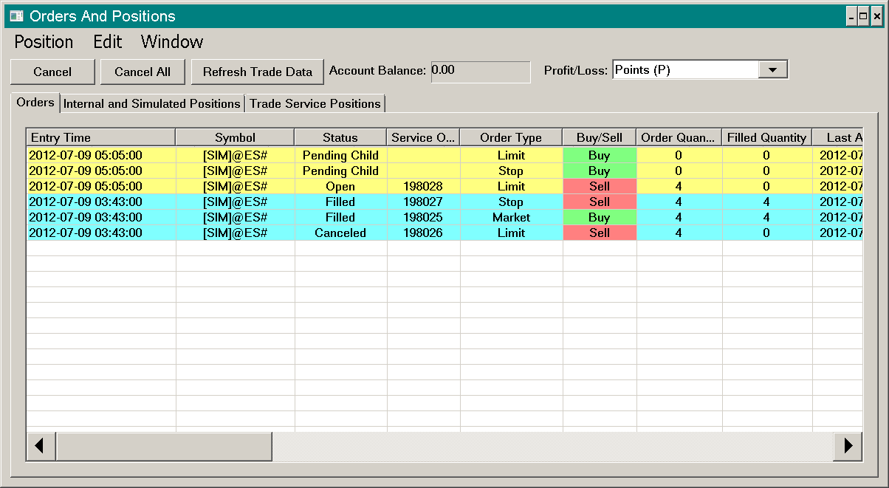
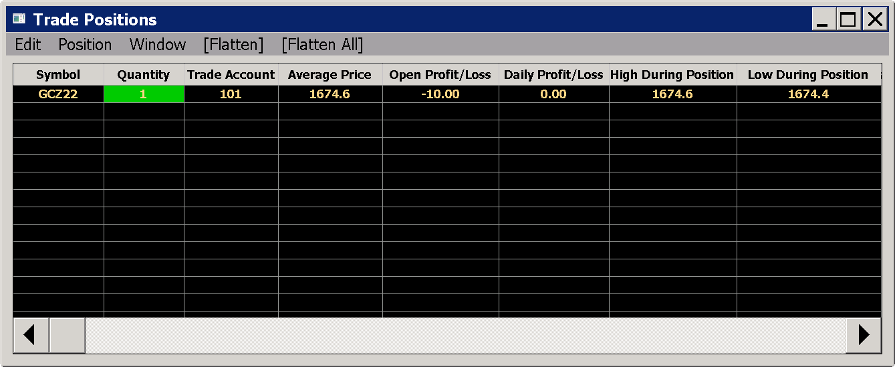
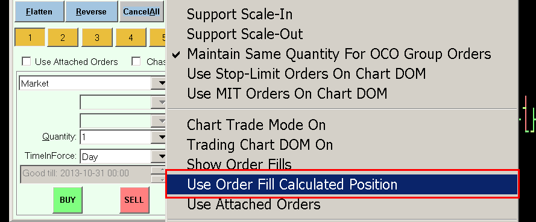

Trading Information Windows
- General Information
- Sorting Lines, Reordering Columns, Adjusting Column Widths
- Setting Colors
- Trade Orders and Trade Positions Windows
- Trade Orders Window
- Trade Positions Window
- Simulated Trade Positions Quantities and Average Price
- Using Order Fill Calculated Positions In Special Cases
- Using Order Fill Calculated Trade Positions
- Trade Account Monitor (Account Balances) Window
- Trade Service Log
- Trade Activity Log (Opens a new page)
- Trade Data Studies
- Trading: Profit/Loss Text Study
- Show Open Profit/Loss
- Show Closed Profit/Loss
- Show Daily Profit/Loss
- Include Open Profit/Loss in Daily Profit/Loss
- Show Total Trades
- Show Total Quantity Filled
- Show Daily Total Trades
- Show Daily Total Quantity Filled
- Show Maximum Open Position Profit
- Show Maximum Open Position Loss
- Show Flat to Flat Closed Profit Loss
- Show Current Trade Time Duration
- Trade Data Study Does Not Display Data or is Misaligned
- Trading: Profit/Loss Text Study
- How Average Price for Positions Is Calculated and Used
- Use Last In First Out Fill Matching for Open Position Average Price
- Use First In First Out Fill Matching for Open Position Average Price
- Use Flat to Flat Open Position Average Price
- Use Theoretical Open Position Average Price
- Order Fills Start Date-Time Needs to Be Set Correctly
- Determining Fills Used in Open Position Average Price Calculation
- Order Fill Calculated Average Price from Order Fill Calculated Position
- Trade Service Provided Average Price
- Position Line Not Visible or Incorrect Average Price
- Open Profit/Loss Calculation
- Determining Whether Order Fill Calculated or Trade Service Average Price is Being Used
- Incorrectly Reported Trade Position Quantity
- Resetting Incorrect Order Fill Calculated Position
- Resetting Position Quantity and Profit/Loss at Start of Trading Day
General Information
This page documents the various Trading Information windows available in Sierra Chart, the available Trading related studies, and various other related information.
Sorting Lines, Reordering Columns, Adjusting Column Widths
For the Trade >> Trade Orders Window and the Trade >> Trade Positions Window, there is the ability to sort the lines of data, reorder the columns and adjust the column widths. Refer to the image below.
On the tabs of the Trade >> Trade Activity Log window, there is the ability to reorder the columns and adjust the column widths only.
{kind=link}
Setting Colors
The foreground and background colors of the content sections of the Trade >> Trade Positions Window, Trade >> Account Balances Window, and the Trade >> Trade Activity Log can be customized with the following color settings in Global Settings >> Graphics Settings.
- General Text Window Background Color
- General Text Window Foreground Color
For instructions to set these, refer to Graphics Settings.
In case of the Trade >> Trade Orders Window window, the colors of Open and Completed order lines have separate color settings. Refer to Trade Orders Window Font and Colors.
Trade Orders and Positions Windows
This section gives an overview of the Trade Orders and Trade Positions windows.
These windows are floating windows that have their own scope, so they can be open at the same time as another attached window.
For example, one of these windows can be open and it is possible to select Analysis >> Studies and have the Studies window open and interact with both windows.
Trade Orders Window
{kind=link}
To view the Trade Orders window, select Trade >> Trade Orders Window on the menu.
The Trade Orders window can also be opened through the corresponding Control Bar button.
This window lists all Open orders, both simulated orders and orders for the connected Trading service. Simulated orders are prefixed with [SIM] in front of the Symbol.
When the Status of an order changes from Open or Order Sent to Canceled, Filled or Error, it will still be listed on this tab, but it is not persistent and will be cleared when Sierra Chart is restarted. There is no guarantee that orders other than Open orders, will be listed on this tab. Do not put reliance on orders other than Open orders from being listed on this tab.
Left clicking with your Pointer on a column header will sort rows according to that column. When left clicking again on the column header, the sort order will change from ascending to descending or the other way around.
Canceling Orders
- Select Trade >> Trade Orders Window on the menu.
- Highlight the order you wish to cancel in the list of orders by left clicking on it with your mouse pointer.
- To cancel multiple orders at the same time, hold the Control key on your keyboard and left click on each order to select them all.
- If the orders you are canceling are non-simulated orders, then make certain there is no checkmark by Trade >> Trade Simulation Mode On on the menu of the main Sierra Chart window.
- Select the Cancel menu command on the Trade Orders window to cancel these orders.
- You will receive a confirmation window. Press Yes to confirm. This confirmation window can be disabled with Global Settings >> General Trade Settings >> Display Confirmation for Order Cancellations from the 'Orders' Tab.
- To cancel all working orders in the list, select the Cancel All menu command.
{kind=link}
Canceling All Orders
- If you want to cancel non-simulated orders, make sure there is no checkmark by Trade >> Trade Simulation Mode On so that it is disabled.
- If you want to cancel simulated orders, make sure there is a checkmark by Trade >> Trade Simulation Mode On so that it is enabled.
- Select Trade >> Trade Orders Window on the menu.
- Press the Cancel All button on the Trade Orders window to cancel the open/working orders.
- You will receive a confirmation window. Press Yes to confirm. This confirmation window can be disabled with Global Settings >> General Trade Settings >> Display Confirmation for Order Cancellations through the Trade Orders Window.
Clearing Orders
Simulated Orders
To clear simulated open and completed orders from the Orders list, select Trade >> Clear Trade Simulation Orders and Data on the menu to clear them. This will cancel all Open Simulated orders and clear all of the Simulated orders listed. It will also clear simulated trading activity data in the Trade Activity Log as well.
Non-Simulated Orders
When you connect to the data and trade server, working and filled orders that the server still has for your account will be listed on the Trade >> Trade Orders Window. They cannot be removed.
However, you can click on a column header, like the Status column, to sort the column and move the Open orders to the top of the list. Also, it is possible to view open orders only. See below for instructions.
Viewing Open Orders Only
To view only orders with a Status of Open and other working statuses, in the Trade >> Trade Orders Window, select the Orders >> Show Only Working Orders menu item on this window.
Filtering Orders by Trade Account
The Trade >> Trade Orders Window by default lists all orders for all Trading accounts available on the connection to the Trading server. For simulated orders, all orders for all simulated trading accounts will be listed.
This list can be filtered to show orders for a single Trade Account.
- On the Trade Orders Window, select Edit >> Select Trade Account Filter. The Trade Account Filter Settings window will display.
- Left click on the Available Trade Accounts list and select an account. Press the A button to accept the selected account and set the Trade Account Filter.
- Set Simulated Filter to Yes for simulated trade accounts. For non-simulated accounts this must be No.
- Press OK.
- To clear the Trade Account filter, select Edit >> Clear Trade Account Filter.
Automatic Clearing of Orders
Non-working orders from the Trade Orders list are automatically cleared after a period of time. This is done for performance reasons and is a feature in newer versions of Sierra Chart.
To see these orders, the historical activity of the orders, and the order fills, refer to the Trade >> Trade Activity Log >> Trade Activity tab. It is recommended for the most consolidated view, to set the Trade Activity Log to display Fills only.
In the case of non-simulated working/open orders, they are cleared 20 minutes after the order becomes non-working from a working/open status.
When preforming an automated trading system backtest with Trade >> AutoTrade System Bar Based Backtest | AutoTrade System Backtest, or you are replaying a chart and have the replay mode set to Accurate Trading System Backtest Mode or Calculate at Every Tick/Trade, then trade orders which are no longer working in the Orders list will be removed from the Orders list.
The check to remove the non-working orders occurs at every chart update.
Refreshing Order Data
Orders which are considered Open (Working) orders will have an Order Status of: Order Sent, Pending Open, Pending Child, Open, Pending Cancel, or Pending Modify.
If there are open orders displayed on a chart or listed in the Trade >> Trade Orders window, and you know they are no longer open, then press the Refresh Trade Data button on the Orders window. If Sierra Chart does not receive any data for an open order from the connected Trading service, it will be internally canceled either immediately. Internally canceling means the order is not actually canceled with the external Trading service, it is canceled within Sierra Chart which indicates it is no longer open.
There can be certain scenarios why Sierra Chart may not have received a status update for an order and the order still displays with an Open state. For example, if you disconnect from the Data and Trade server (File >> Disconnect), and then you cancel the order through another program, Sierra Chart will not know about this.
However, when you connect again to the Data and Trade server, if Sierra Chart does not receive any data for listed orders that are in an Open state, they will be internally canceled. This occurs in about 5 seconds after the connection to the Trading sserver.
Another step you can take if you question or have any issue with the Orders or Position data you see displayed on the Trade Orders window is to reconnect to the servers by selecting File >> Reconnect.
Order Window Field Descriptions
- Entry Time: This is the Date and Time that an order has been added to the Trade Orders Window. It is not necessarily the time that the order was actually submitted.
For example, when you connect to a trading service, the working orders will be requested and listed. If a working order is received from the Trading service and is not already listed, then this will show the Date Time that the order was added to this list.
This Date Time is based upon your local computer clock when the order did not originate from a chart replay or back test. It does not originate from the server. This time is adjusted to the Time Zone setting in Sierra Chart. During a chart replay or back test, this Date Time is based upon the last Date Time in the replaying chart at the time the order was submitted.
If an order has an incorrect timestamp or a slightly incorrect timestamp, then it may not match with the correct chart bar. It is important the computer's clock is set accurately when orders do not originate from a chart replay or back test. Refer to Help topic 38. - Last Activity Time: This is the Date Time that the listed order has been last updated. This is based upon your local computer clock and not the server. This time is adjusted to the Time Zone setting in Sierra Chart. During a chart replay, this Date Time is based upon the last Date Time in the replaying chart and not the current actual time.
- Symbol: This is the symbol of the order. If the order is not simulated and sent to the connected Trading service, then the symbol will have no prefix in front of it. If the order is being handled by the Sierra Chart Trade Simulation Mode, then the symbol will have the [Sim] prefix.
- Order Quantity: This is the quantity of the order. This can either be contracts, shares, or currency units.
- Price: This is the price of the order. If the order has only one price, then this is the only price used.
- Price2: In the case of Stop-Limit orders, this is the Limit price. Price2 is only used for Stop-Limit orders.
- Status: This is the order status. It can be one of the following:
- Order Sent: The trade order has been sent to the Sierra Chart Trade Simulation system or the connected Trading service. It will be changed to another order status once the Trade Simulation system or the connected trading service gives an indication that the order has been received.
In the case of the Sierra Chart Trade Simulation system it will immediately change the status to Open. It will not remain in the Order Sent status.
In the case of when an order is sent to an external connected Trading service, if the order is not acknowledged it will remain in the Order Sent status. In this case select Edit >> Refresh Trade Data. Either the order status will immediately change or the order will be canceled by Sierra Chart within one minute if there is no response from the Trading service for it.
For some of the supported Trading services, if an order is in the Order Sent status for an extended time, Sierra Chart will try to request the status of it automatically. The progress of this is displayed in the Trade >> Trade Service Log.
Depending upon the Trading service you are using and the actual state of the order it may or may not be able to be canceled with a status of Order Sent. - Pending Open: This order status is only valid when an order is sent to the connected external Trading service. It is not used in Sierra Chart Trade Simulation Mode. It generally means that the connected trading service has indicated that the order has not yet reached an Open state and therefore it cannot be filled in this state. It should be possible to cancel an order in this state.
- Open: The order is in a working state and can be filled. It may also be partially filled and still working. In the case of a non-simulated order, the connected Trading service has indicated that the order has been accepted and it is working. It is possible to cancel an order in this state. In Trade Simulation Mode, there are no partial fills, an order is either completely filled or not filled.
- Filled: The order has completely filled or has been canceled before it has completely filled. In Trade Simulation Mode, there are no partial fills, an order is either completely filled or not filled. Generally there is no reason to cancel an order in this state, but it is possible to select the order in the Trade Orders Window and Cancel it.
- Pending Cancel: A request to cancel the order has been made and confirmation of the cancellation is being awaited. It is possible to attempt further cancellations in this state.
- Canceled: The order has been canceled. It is no longer working or in an Open state. It cannot be filled any longer. The order may have been partially filled. Whether a partially filled order that has been canceled will have a status of Filled or Canceled depends upon the Trading service you are connected to and what status they give. In the case of Trade Simulation Mode, a canceled order will always have a status of Canceled.
A completely filled order can also have a status of Canceled if at the time the order status is checked, the order is no longer available on the trading server, and the order in the Sierra Chart order list was indicated to still be Open at the time of the check. This can happen if an order fills when Sierra Chart is not connected to the external trading server and later Sierra Chart is connected. - Pending Modify: A request to modify the order has been made and confirmation of the modification is being awaited. It is possible to cancel an order in this state.
- Pending Child: This order status only applies to Attached Orders . It means the order is being held by Sierra Chart until the parent order fills partially or completely. The orders can be definitely and immediately canceled in this state. When the parent order partially or completely fills, then the Attached Orders will have their Status changed to Open.
- Error: There was some error with the order. This could happen initially or at some other point during the life of the order. The reason for the error usually will be displayed in Trade >> Trade Service Log. The line in the Trade Service Log will contain the order's Internal Order ID and Service Order ID for reference.
- Order Sent: The trade order has been sent to the Sierra Chart Trade Simulation system or the connected Trading service. It will be changed to another order status once the Trade Simulation system or the connected trading service gives an indication that the order has been received.
- Internal Order ID: This is a numeric identifier that Sierra Chart internally uses to identify the order. This is always an integer value.
In the case where you have more than one instance of Sierra Chart running and connected to the same external trading account, non-simulated orders will be listed in each instance and for the same order with the same Service Order ID, the Internal Order ID will be unique for each instance. - Order Type: This is the order type. It can be any of the supported order types.
- Filled Quantity: This is the quantity of shares or contracts that has been filled.
- Average Fill Price: This is the average price of all of the order fills in the order. An order can fill in one or more parts. If the Quantity of the order is 1, there would only be one fill. If there is any question about the fill price of a simulated order, then refer to How Orders Are Filled.
- Buy/Sell: This indicates the Side of the order. This can be either Buy or Sell.
- Service Order ID: This is the order identifier provided by the external Trading service to identify the order. In the case of a Simulated order, using Sierra Chart Trade Simulation Mode, this will always be the same as the internal order ID.
- Open/Close: This will be either Open or Close and indicates whether the order will open or close a position.
- Parent Internal Order ID: This is the Internal Order ID of the parent order in case this is a Child/Attached Order. Otherwise this is 0.
- Time in Force (expiration type): The Time in Force for the order. Possible values include Day, Good till Canceled, Good till Date Time, Immediate or Cancel, All or None, or Fill or Kill.
- Good Till DateTime: If the Time in Force is Good till Date Time, then this field indicates the order expiration date and time.
- Trade Account: The account identifier with your Trading service for which this order is contained in. In Sierra Chart Trade Simulation mode, simulated orders will indicate Sim#. The # is equivalent to any number from 1 to 400 indicating what particular Trade Simulation Mode account is being used.
- Link ID: An Attached Order that is in the All Groups OCO Group or a parent order, will be split into smaller orders if there is more than one OCO group used in the list of Attached Orders submitted with an order. When an order is split into smaller orders, they are linked together and this indicates the Internal Order ID used for linking. It is the Internal Order ID of the first order in that group. When one of the orders in a group of orders linked together is modified or canceled, the other ones will be as well. This happens automatically.
- OCO ID: If two orders are in an OCO (order cancels order) group, then this field will display the OCO Internal ID for that OCO group and it will match with the other order that is part of the same OCO group. The OCO Internal ID is the Internal Order ID of one of the orders in the OCO group.
- Last Order Action Source: This field displays the source of the last action for the order and other detailed text information about the latest order action. In the case of a newly entered order, it will display the name of the chart the order originated from.
- Exchange Order ID: This is the order identifier from the exchange that the order is submitted to. It may not always be available and could be blank. In the case of where Sierra Chart is routing orders through an intermediary Sierra Chart order routing server to a Trading service which then routes them to the exchange, this order ID will be the ID provided by that Trading service.
- Text Tag: This field displays the information that has been entered for the order as a Text Tag.
- Trail Order Offset: This displays the trail offset entered for the order when the order is one of the Trailing types.
- Trail Order Step Amount: This displays the trail step amount entered for the order when the order is one of the Step Trailing types.
Orders Window Font and Colors
The Font for the Trade >> Trade Orders Window is set through the Global Settings >> Graphics Settings >> Fonts tab.
Refer to the Fonts documentation for this.
The name of the font is Text Windows Font.
The colors of Open and Completed order lines are colored separately. These colors are set through the Global Settings >> Graphics Settings window. The color settings are as follows:
- Trade Orders Window Open Order: This color setting sets the color of order lines in the Trade Orders list that have an order status of Order Sent, Pending Open, Pending Child, Open, Pending Modify, or Pending Cancel.
- Trade Orders Window Completed Order: This color setting sets the color of order lines in the Trade Orders list that have an order status of Filled, Canceled, or Error.
- Trade Orders Window Text: This color setting sets the text color of order lines in the Trade Orders list.
For more information, refer to Graphics Settings.
Deleting Trade Orders File
The file that contains the orders which are listed in the Trade >> Trade Orders Window can be deleted to clear those orders. This is an unusual procedure which should not normally be done and is not recommended unless those orders are just not needed any longer and they are not clearing for some other unusual reason.
Follow the instructions below.
- Exit from Sierra Chart.
- Go to the Sierra Chart installation folder. To determine the location where Sierra Chart is installed on your system, open the Message Log with Window >> Message Log. Near the top, you will see a line like this: Program path: C:\SierraChart\.
- Go to that folder and delete the TradeOrdersList.data file.
- Run Sierra Chart.
Automatic Cancellation of Non-Existent Orders
Anytime the Trade Orders List is fully updated in Sierra Chart from the external Trading server, any orders which are no longer Open or working, and have not received an update from the external Trading server, will be set to Canceled.
This will be the Order Action Source text for these canceled orders in the Trade Activity Log:
Internally marking as canceled. No order update from server. For Trade Account:
One reason this can happen is that an order has filled or has expired when Sierra Chart was not connected to the trading server.
Trade Positions Window
To view the Trade Positions window, select Trade >> Trade Positions Window on the menu.
The Trade Positions window can also be opened through the corresponding Control Bar button.
This window displays the current Trade Positions for non-simulated trading.
Overview
{kind=link}
The Trade Positions window displays the current Trade Positions for non-simulated trading.
This Trade Positions data is calculated from the order fills as they occur in real time and will be automatically synchronized to the Trading Service Positions data if it is out of sync with it. So the displayed Trade Positions on the Positions tab will always represent the accurate and current Trade Positions.
For a list of simulated Trade Positions, refer to the Trade Statistics for Charts tab on the Trade >> Trade Activity Log window.
Refresh Trade Data
Selecting Edit >> Refresh Trade Data will refresh the non-simulated Orders and Positions data from the connected trade server. It has no effect upon simulated trading data. This never has to be done manually in almost all conditions since the Orders and Positions are automatically updated.
Flatten Trade Positions
Follow the instructions below to flatten current non-simulated Trade Positions.
Flatten means to send a market order to make the current Position quantity 0.
- Select Trade >> Trade Positions Window on the main menu to open the Trade Positions window.
- It is recommended to enable Global Settings >> General Trade Settings >> Hold Market Order Until Pending Cancel Orders Are Confirmed. Although this will delay the sending of the market order.
- Enable Position >> Cancel Orders for Symbol When Flatten from the Trade Positions window menu, if you want all non-simulated open/working orders for the symbols having their Positions flattened, to also be canceled at the same time.
- In the list of Positions, select the Position or Positions lines you want to flatten. To select multiple Positions hold the Control key and select them one by one.
- Select the Flatten menu command at the top.
- Or you can select the Flatten All menu command at the top, to flatten all Positions regardless of which Position lines are selected. In this case there is no requirement to select particular Position lines.
When using this command there is always a prompt to confirm the Flatten All operation. All Positions will be flattened/closed regardless of what is listed in case there is a Trade Account filter set preventing some Positions from being displayed. - Press Yes to confirm.
A Keyboard Shortcut and/or a Control Bar button can be added to perform the same action as Flatten All on the Trade Positions Window. This only applies to non-simulated Positions. Not Positions when in Trade Simulation Mode. The keyboard shortcut and the Control Bar button is named "Trade Flatten All Positions - All Accounts".
Positions Window Fields
The following is a list of the fields for each symbol displayed on the Trade Positions window.
- Symbol: This is the symbol for which the Position data is for.
- Quantity: This is the quantity of the Position. This will either be contracts, shares, or currency units depending upon the type of market the Symbol is for.
- Trade Account: This is the Account identifier for the Trade Position.
- Average Price: This is the Average Price of the current Position provided by the connected external Trading service.
The external Trading service may not provide a Position Average Price or it may not be supported by Sierra Chart for that service.
Sierra Chart also calculates and maintains its own Average Price for the Trade Positions which is dynamically calculated from the order fills in the Trade >> Trade Activity Log. This calculated Average Price can be viewed on a chart, Trade DOM, and the Trade Statistics and Trades tabs of the Trade Activity Log. For more information, refer to How Average Price for Positions Is Calculated and Used. - Open Profit/Loss: This is the Open Position Profit or Loss. This will not be calculated and remain at 0 if there is no Position Average Price.
- Daily Profit/Loss: This field is is used internally by a Sierra Chart server but it does not update on the Trade Positions window for users.
- Daily P/L Reset DateTime: This is the Date and Time that the Daily Profit/Loss will reset.
- High During Position: This is the highest price reached while this Position is open. It resets to zero when the Position quantity changes.
- Low During Position: This is the lowest price reached while this Position is open. It resets to zero when the Position quantity changes.
- Last During Position: This is the most recent last trade price while this Position is open. It resets to zero when the Position quantity changes. In the case of Sierra Chart based order routing services, this will remain at 0.
- Margin Requirement: This is the current margin requirement for the Position.
- Service Position Quantity: This is the Position quantity for the symbol provided by the connected Trading service. The Quantity field is calculated by Sierra Chart by the order fills received. If the Quantity field becomes different than Trade Service Position Quantity, then Quantity is synchronized to the Trade Service Position Quantity.
The reason there are two separate quantity fields is so that Sierra Chart can accurately determine whether a fill received is an opening or closing (entry or exit) fill. Sierra Chart cannot do this without maintaining its own independent Trade Position Quantity variable set from the order fill events received from the server. - Currency: This is the currency code for the Position
- Entry Date-Time: This is the Date and Time that this Position was entered.
- MaxPotentialPosQty: This is maximum potential Position quantity based upon the current Position quantity and working orders. This field is only supported with Sierra Chart order routing and simulated trading services.
Position Quantity and Automated Trading
In the case of one performing automated trading using ACSIL or the Spreadsheet System for Trading study, it is helpful to understand the following regarding the Trade Position Quantity fields.
The Trade Position Quantity which is the Quantity displayed in Sierra Chart and given to automated trading systems is updated by fills/executions. It is not directly updated by Trade Position data updates from the external trading service.
However, if the calculated Trade Position Quantity from the order fills is out of sync with the reported Trade Service Position Quantity from the external trading service, then after about 8 seconds the order fill calculated Position Quantity will be synchronized to the Trade Service Position Quantity after there has been an unsolicited update of the Trade Service Position Quantity.
If there is a solicited Trade Position data update, the synchronization happens immediately.
Only Single Consolidated Position Maintained and Displayed per Symbol and Trade Account
For each Symbol and Trade Account, Sierra Chart only maintains a single consolidated/combined Position Quantity and Position Average Price.
Sierra Chart does not maintain individual active Positions for each separate trade for the same Symbol and Trade account. If this is what you require, it is necessary to use separate Trade Accounts which are supported. Refer to Selecting Trade Account.
Clearing Simulated Position in Sub Instance
In a sub instance of Sierra Chart that has Trade Simulation Mode disabled, when using a simulated Trade Account in the sub instance, and the main instance of Sierra Chart has Trade Simulation Mode enabled, the Position reporting in the sub instance is based upon the order fill data in the main instance of Sierra Chart.
If you want to clear that Position in the sub instance without using Flatten, then you will need to clear the order fill data for that Symbol and Trade Account of the Position in the main instance of Sierra Chart.
To do this, refer to Clearing Trade Activity Data.
Simulated Trade Positions Quantities and Average Price
Simulated Trade Positions data for Trade Positions created while in Trade Simulated Mode are not displayed on the Trade >> Trade Positions Window.
For information about where to view Simulated Trade Positions data, refer to Viewing Positions and Current Profit/Loss on the Trade Simulation Mode page.
The current Trade Position Quantity you see displayed on a Trade Window and on the Chart Stats tab for a particular Symbol is for the Selected Trade Account. So it is for a Symbol and Trade Account pair.
The current Simulated Trade Position Quantity for a particular Symbol and simulated Trade Account is calculated from all of the order fills in the Trade Activity Log >> Trade Activity Tab for that Symbol and Trade Account.
For a detailed explanation of the Position Quantity calculation method, refer to Open Quantity Field Calculation.
The following will cause the Trade Position data for a Symbol and Trade Account to be cleared:
- Selecting Trade >> Clear Trade Simulation Orders and Data.
- Clearing the Simulated Trade Activity Log data for a particular Symbol and Trade Account.
- Starting a Chart Replay and choosing the option to clear the trade data (Clear All Trade Data for Symbol and Account).
Using Order Fill Calculated Positions In Special Cases
There are some special cases where you cannot rely upon the Trade Position data from the Trading service you are using. An example of this would be futures spread/strategy symbols often do not have reported Trade Position data for them but instead are reported for the outright contracts themselves. Another case would be where Trade Positions are not provided at all, as is the case with the LMAX Forex trading service.
In these cases it is necessary to use the Using Order Fill Calculated Trade Positions. In the case of TT FIX spreads/strategies and when using LMAX, the Order Fill Calculated Positions will automatically be used.
To confirm you cannot use the Trading service provided Trade Positions data, select Trade >> Trade Positions Window from the menu. If you do not see the non-simulated Positions that you have in your trading account, or the symbols for those Positions do not match the Chart or Trade DOM, then it is necessary to use the Order Fill Calculated Positions.
For instructions to use the Order Fill Calculated Position for an individual chart or Trade DOM, refer to Using Order Fill Calculated Trade Positions.
Using Order Fill Calculated Trade Positions
{kind=link}
For various reasons, when trading some symbols through some Trading services or with certain Trading services, you cannot rely upon the Trade Position data provided by the Trading Service you are using.
Trade Position data may not be available or it may not accurately track the true Trade Position Quantity for a Symbol and Trade Account. For example, when trading exchange traded futures spreads or strategies through some Trading services, no current Trade Position data is provided for that particular spread/strategy.
Additionally, you may want to have a Trade Position Quantity reported in a Chart or Trade DOM which begins from a specific Date-Time independent of the actual Trade Position Quantity for the Symbol and Trade Account.
Sierra Chart has a feature where you can see the current Trade Position Quantity and Average Price for a Symbol and Trade Account on a Chart or Trade DOM, calculated directly from all of the order fills Sierra Chart has for non-simulated trading for that Symbol and Trade Account.
This is a method by which you can track the current Trade Positions completely independent from the Trading service reported Trade Position data.
This feature can be enabled by Opening the Trade Window and enabling Menu/M >> Settings >> Use Order Fill Calculated Position.
Use this option to report the Trade Position Quantity and Average Price based strictly upon the order fills that Sierra Chart has for the Symbol and Trade Account the Chart or Trade DOM is set to. This command is specific to each individual chart or Trade DOM it is enabled for.
You can switch in and out of this at will. If a fill is missed, Sierra Chart will attempt to download missing fills upon a connection to the server, so it can always accurately report the Trade Position for a particular Symbol and Trade Account.
It is important to be aware that Sierra Chart needs to have all of the order fills stored in the Trade Activity Log for the current order fill calculated Trade Position and the very first fill needs to be at a point in time where the Position was previously flat for the Symbol and Trade Account, for an accurate Trade Position Quantity and Average Price indication.
Otherwise, the resulting Trade Position Quantity and Average Price will be inaccurate. In this case, refer to Order Fill Calculated Trade Position Not Accurate.
Order Fill Calculated Trade Position Not Accurate
Since the Order Fill Calculated Trade Position relies upon order fill data for a particular Symbol and Trade Account in the Trade Activity Log, and not upon Trade Position data from the external Trading service, it is essential that Sierra Chart has all of the order fills that currently make up the current Trade Position for a Symbol and Trade Account and that those fills are accurate.
Therefore, if there is any inaccuracy with the reported Order Fill Calculated Trade Position Quantity or Average Price, then refer to the Solving Inaccurate Trade Statistics for Charts Field Values section. The documentation in that section also applies to this case as well.
Order Fill Calculated Trade Position Average Price
The Average Price for the Order Fill Calculated Trade Position is determined from the weighted average of the fill prices for the order fills which the Trade Position consists of.
For complete documentation, refer to How Average Price for Positions Is Calculated and Used.
Trade Account Monitor (Account Balances) Window
To display the Balances window, select Trade >> Trade Balances Window from the menu.
The Balance window displays various fields of Account Balance related data. This data is only for non-simulated trading and comes from the Trading service Sierra Chart is connected to.
There is a separate line of Account Balance data for each Trade Account associated with the logged in Trading account username.
There is no Account Balance data maintained for simulated trading when Trade >> Trade Simulation Mode On is enabled. If you want to do simulated trading, which uses an account Balance, then use the Simulated Trading Service. However, this does not apply to Chart Replays. A chart replay uses Trade Simulation Mode and there is no account balance.
Not all supported Trading services provide Account Balance related data and not all of them will continuously update this data. If the Trading service provides Account Balance data, it may be infrequently updated. If the Account Balance fields are empty, then this means that the particular Trading service you are using does not provide this data. In this last case, you will need to ask your Trading service about how to view their Account Balance data.
The frequency of the Account Balance data updating depends upon how often the Account Balance data is transmitted by the connected Trading service. This is not something that Sierra Chart can control.
Trade Account Monitor Field Descriptions
- Trade Account: This is the trade account number. The account balance fields are for.
- Cash Balance: This is the cash balance in the account. Not provided with all Trading services.
- Available Funds: This is the amount available to take new positions. Not provided with all Trading services.
- Margin Requirement: This is the amount required to maintain existing positions. Not provided with all Trading services.
- Account Value: This is the total account value of cash and securities in the Trade Account. Not provided with all Trading services.
- Currency: This is the currency for all of the other balance fields on the same line.
- Open Positions Profit/Loss: This is the current profit/loss for all of the open Positions. This is only supported with the Simulated Futures Trading Service.
- Daily Profit/Loss: The Daily Profit/Loss is provided by the server, if available, and indicates the profit or loss for the trading day for the Trade Account. It may or may not include commissions. This value will not correspond with the other Daily Profit/Loss values which are calculated within Sierra Chart. This is only supported with the Simulated Futures Trading Service and the Teton Futures Order Routing Service. This resets daily.
- Daily Net Loss Limit: In the case of when using Teton Order Routing or the Simulated Trading Services, this field displays the Daily Net Loss Limit set for the Trade Account. This can be based either upon a fixed currency value or be based upon a percentage the trading account value at the time it was last calculated. This field is not related to Global Profit/Loss Management. It is completely separate from that.
- Trail Account Value To Limit Positions: (Not currently used)
- Close Positions EOD:
- Is Under Margin:
- Trading Is Disabled:
- Description:
- Daily Loss Reached:
- Is Under Minimum NLV:
- Transaction Date Time:
- NLV/Margin:
- Full Margin:
- Full Margin Positions:
- NLV/PosMargin:
- Peak Margin:
- Daily Net Profit/Loss:
- Open Pos Sett Profit/Loss:
- EOD Account Value:
Trade Service Log
To display the Trade Service Log, select Trade >> Trade Service Log from the menu.
If the Trade Service Log does not display when selecting a menu command, then first select Window >> Reset Windows and select this same command again. The Trade Service Log will then be displayed.
The Trade Service Log displays the following messages:
- Trading related messages from the connected Trading service Sierra Chart is connected to. This also includes error messages related to submitting new orders, modifying orders and canceling orders.
- Trading related error and information messages from Sierra Chart.
- Automated Trading related messages.
Interpreting Trading Service Order Related Messages
When Sierra Chart is connected to a Trading service, and Trade Simulation Mode is disabled, when there is some error related to the submission of a new order, modification of an order or canceling an order, the trading service will provide an error message, indicating the reason for this. This is going to be logged in the Trade connectivity Log with the order and that is also displayed in the Trade Service Log
Below is an example of this:
The text after Text: originates from the trading service or trading platform service Sierra Chart is connected to. You will need to contact your broker for help with these types of messages. Sierra Chart support cannot provide any help with them.
Automatic Opening of Trade Service Log
In the case where the Trade Service Log is automatically opened when a message is added which requires a user's attention you can close the Trade Service Log by pressing the X button at the top right of that window or press the Close Log button.
Alternatively, you can just keep the Trade Service Log open and move it to the edge of your screen if you do not want to see it. When it is left open, it will not automatically open when a message is added which normally would open the Trade Service Log.
Some messages like automated trading messages can either open the Trade Service Log if it is not already open when they are added, or not automatically open the Trade Service Log. The setting that controls this is Global Settings >> General Trade Settings >> Open the Trade Service Log When a New Message is Added.
Trade Activity Log
To display the Trade Activity Log, select Trade >> Trade Activity Log from the menu. For more information refer to the Trade Activity Log page.
Trade Data Studies
Sierra Chart provides many studies that display trading information from the order fill data for the Symbol and Trade Account of the chart, in a graphical form for each bar in the chart.
To add one of the studies listed below to a chart, select Analysis >> Studies on the menu and Add them to the chart just like any other study. For complete instructions, refer to Adding/Modifying Chart Studies.
It is essential that the first order fill loaded into the chart is correct. For further information, refer to Understanding and Setting the Start Date-Time for a Trades List.
When Trade >> Trade Simulation Mode is checked, then simulated order fills will be used in the study.
When Trade >> Trade Simulation Mode is off/unchecked, then non-simulated order fills will be used in the study.
With all of these studies, when there is no order fill data for a particular bar in the chart, the study will carry forward and draw the prior value, if any.
In the case of all of these studies, a Closed trade consists of a fill that increases a Trade Position and the subsequent order fill that fully offsets that increase in the Trade Position. The Fill to Fill Order Fill Matching Method is used when determining a closed trade.
For the trading studies that display Profit/Loss values, the format of the Profit/Loss value is dependent upon the Chart >> Chart Settings >> Trading >> Profit/Loss Format display setting.
Profit/Loss formats which use - Ignore Quantity will be considered the format without the Ignore Quantity. Therefore, if you select Ticks - Ignore Quantity, it will be interpreted as Ticks.
- Trading: Closed Profit/Loss: This study will display the cumulative profit/loss from closed Trades that there are order fills for in the Trade Activity Log for the Symbol and Trade Account. All available order fills are included. A closed Trade is one in which there is an opening fill and a closing fill. A currently open Trade which has no corresponding closing fill is not included in the study. For further details, refer to the Trades tab of the Trade Activity Log.
- Trading: Daily Profit/Loss: This study will display the cumulative Profit/Loss from closed trades for each day in the chart. Each day is 24 hours. This is considered a Daily Trade Statistic which resets daily. For complete details, refer to Understanding Daily Trade Statistics Reset Time.
- Trading: Maximum Drawdown: This study will display what the Maximum Drawdown is based upon the closed trades at each bar in the chart.
- Trading: Maximum Runup: This study will display what the Maximum Runup is based upon the closed trades at each bar in the chart.
- Trading: Profit/Loss Text: For more information about this study, refer to Trading: Profit/Loss Text Study.
- Trading: Total Quantity Filled: This study will display the total quantity filled for closed trades, at each bar in the chart.
- Input: Yes = Daily Values, No = Cumulative Values: When this Input is set to Yes, the trading data displayed by the study is reset daily. This is considered a Daily Trade Statistic which resets daily. For complete details, refer to Understanding Daily Trade Statistics Reset Time. When this Input is set to No, the trading data displayed by the study does not reset daily, it is cumulative.
- Trading: Total Trades: This study will display the total number of closed trades at each bar in the chart.
- Trading: Winning Trades: This study will display the total number of winning closed trades at each bar in the chart.
- Trading: Losing Trades: This study will display the total number of losing closed trades at each bar in the chart.
- Trading: Position Quantity: This study will display the most recent Position Quantity at a chart bar which exists at the ending Date-Time of that chart bar.
- Trading: Position Average Price: This study will display the most recent Position Average Price at a chart bar which exists at the ending Date-Time of that chart bar.
Trading: Profit/Loss Text Study
The Trading: Profit/Loss Text study, is a study which displays various Profit/Loss values and trade statistics directly on the chart in text form. This text can be positioned anywhere on the chart by using the study inputs to control its position.
To add this study to the chart, refer to the Adding Chart Studies documentation.
For the non-daily Cumulative Profit/Loss values and the Trade Statistics like Closed Profit/Loss, this study uses all order fill data from the Trade >> Trade Activity Log >> Trade Activity tab.
To see the order fill data that the study uses, refer to the Viewing Historical Trade Activity documentation. Make sure you set the Symbol and Trade Account properly on the Trade Activity Log.
When Chart >> Chart Settings >> Order Fills Start Date-Time has the Date box filled in, then order fills are only loaded into the chart since the specified starting Date-Time and not all of the order fills are used.
The study has Yes/No inputs to display each of the items below. Below are explanations of how each of the items can be displayed and are calculated.
The Text Size for this study can be controlled through the Text Size Input with this study. Refer to Modifying Chart Studies. To control the particular Font Face, this can be changed through Global Settings >> Tool Settings >> Global Chart Drawing Font. After changing the Font Face, it is necessary to select Chart >> Recalculate for any chart containing the study for the new font to go into effect.
The study depends upon the Trades list in a chart, and the generated Trade Statistics from that list. Make sure you have the correct Trades List Starting Date-Time and the correct Reset Time set.
There must be no missing order fills for the time the Trade Statistics are generated for.
The location of this study can be controlled through the Inputs for Horizontal Position from Left and Vertical Position from Bottom.
Show Open Profit/Loss
This is the Open position Profit or Loss. This calculation is based upon the last trade price for the symbol and the Position Average Price. For information about how the Position Average Price is calculated or obtained, refer to How Average Price for Positions Is Calculated and Used.
Show Closed Profit/Loss
Closed Profit/Loss is the cumulative profit/loss of completed trades, using a Fill to Fill matching method for the purpose of grouping fills into trades. This is based upon all of the fills for the symbol in the Trade >> Trade Activity Log.
Show Daily Profit/Loss
This is the cumulative profit/loss of completed trades that were opened in the current trading day, using a Fill to Fill matching method for grouping fills into Trades. This is based upon the order fills for the current trading day for the Symbol and Trade Account in the Trade >> Trade Activity Log.
This is considered a Daily Trade Statistic which resets daily. For complete details, refer to Understanding Daily Trade Statistics Reset Time.
Include Open Profit/Loss in Daily Profit/Loss
The Net Profit/Loss is the Daily Profit/Loss plus the current position Open Profit/Loss.
When the Open Profit/Loss is combined with the Daily Profit/Loss (Daily Net PL), the Open Profit/Loss is calculated directly from the trade order fills contained in the Trades list of the chart which originate from the Trade >> Trade Activity Log.
This Open Profit/Loss potentially can be different than the Open Profit/Loss that is separately displayed since it will use a FIFO method for the average price calculation and also has a dependency on an accurate Position Quantity Calculation. For more information, refer to Solving Inaccurate Trade Statistics for Charts Field Values.
The Open Profit/Loss in this case does not not use the current Position Average Price and the current Position Quantity. It uses an internal calculation for these which has a dependency on the order fills which make up the open Trade Position. If you are carrying a long-term Trade Position and Sierra Chart does not have the trade fills which make up that Trade Position, in the Trade >> Trade Activity Log, then the Net Profit/Loss will not be accurate.
Missing or inaccurate order fills can cause the order fill calculated Net Profit/Loss to be incorrect. If the Net Profit/Loss is incorrect, then refer to Help With Daily Profit/Loss Value.
The Open Profit/Loss and Net Profit/Loss values can also be viewed on the Trade Statistics for Charts tab.
Show Total Trades
This is the total number of completed trades, using a Fill to Fill matching method for the purpose of grouping trades. This is based upon all of the fills for the symbol in the Trade >> Trade Activity Log.
Show Total Quantity Filled
This is the total quantity filled for completed trades, using a Fill to Fill matching method for the purpose of grouping trades. This is based upon all of the fills for the Symbol and Trade Account in the Trade >> Trade Activity Log.
Show Daily Total Trades
This is the total number of completed trades for the current trading day, using a Fill to Fill order fill grouping method to create trades. This is based upon the order fills for the current trading day for the Symbol and Trade Account in the Trade >> Trade Activity Log.
This is considered a Daily Trade Statistic which resets daily. For complete details, refer to Understanding Daily Trade Statistics Reset Time.
Show Daily Total Quantity Filled
This is the total quantity filled for completed trades for the current trading day. This is based upon the fills for the current trading day for the Symbol and Trade Account in the Trade >> Trade Activity Log.
This is considered a Daily Trade Statistic which resets daily. For complete details, refer to Understanding Daily Trade Statistics Reset Time.
Show Maximum Open Position Profit
This is the maximum profit that the Trade experienced at any moment during the life of the Trade. Also known as Maximum Favorable Excursion (MFE).
The calculation is based on the High/Low Price While Open Trades list fields for the Trade.
Show Maximum Open Position Loss
This is the maximum loss that the Trade experienced at any moment during the life of the Trade. Also known as Maximum Adverse Excursion (MAE).
The calculation is based on the High/Low Price While Open Trades list fields for the Trade.
Show Flat to Flat Closed Profit Loss
This is the cumulative profit/loss of completed trades that were opened in the current trading day, using a Fill to Fill matching method for grouping fills into Trades.
Show Current Trade Time Duration
This is the amount of time the current trade has been open.
This particular time duration is very dependent on complete and accurate order fill information loaded in the chart. And the first order fill loaded in the chart must align to the start of the current or a prior Trade Position. For complete details, refer to Trade Data Study Does Not Display Data or is Misaligned.
If there are missing order fills, or the first order fill loaded in the chart does not precisely align to the start of the current Trade Position or one of the prior Trade Positions, then no time duration will be displayed.
Trade Data Study Does Not Display Data or is Misaligned
When using one of the Trade Data studies that begins with Trading: like Trading: Total Trades or Trading: Closed Profit/Loss and there is not the trading data displayed for the corresponding chart bars when there are trades at those bars, prior trade data is not included, the data is misaligned, or the trading data is delayed before it is displayed, then this can be due to the following reasons given below.
This information is also applicable to the Trading: Profit/Loss Text study. However, the particular issues you would see with the Trading: Profit/Loss Text study will be based upon the same underlying reasons but show differently.
- The order fills do not exist in the Trade >> Trade Activity Log >> Trade Activity tab for the particular Symbol and Trade Account the chart is set to. For instructions to use the Trade Activity Log to see the data, refer to Viewing Historical Trade Activity.
- The studies are built from order fills and it is essential to understand how order fills are grouped and matched together. For complete details, refer to Order Fill Matching and Flat to Flat Definition and Open Quantity Field Calculation Method.
- To actually see the individual Trades which consist of an opening fill and a closing fill which are used in the Trade Data studies, follow the instructions for the Trades tab in the Trade Activity Log.
Make sure you set the Date Range to Display >> From Date and Time to the very same Date and Time you see in the Order Fills Start Date-Time field for the chart in the Trade Stats for Charts tab, so you get an exact match of the Trades data used in the chart which are used in these Trade Data studies. This gives you a very good understanding of the data that goes into these studies and to troubleshoot any problems with them. - The Trade Account is not set correctly on the Trade Window for the chart.
- Your computer's Date or Time is not set correctly which will cause Trade Data to be misaligned to the chart bars, be delayed before it is displayed, or filtered out completely.
Refer to help topic 38 for help with setting your computers Date and Time. Once your computer's Date and Time is corrected, this will not solve the inaccurate timestamps on existing order fills. Those fills will still be wrong and require editing of the Date-Time of them. - The Order Fills Start Date-Time setting in the chart does not align to the precise order fill which is the start of a new Trade Position. Or this Date-Time does not include all of the fills that are needed for the study being used.
- If you are using a Trade Data study on a Historical Daily, Weekly, Monthly, Quarterly, or Yearly chart, then the alignment of data may not be correct with these chart types. The Trade Data studies are not recommended to be used with these types of charts. Only Intraday charts.
How Average Price for Positions Is Calculated and Used
In the Trade Window for a chart or Trade DOM, the Trade Position Average Price is displayed on the Main and C tabs after the current Trade Position Quantity (refer to image below).
{kind=link}
Additionally, the Trade Position Average Price is displayed on the chart or Trade DOM on the Position Line which is displayed at the level of the Average Price.
By default, the Average Price for the current open Trade Position is calculated from the order fills stored in the Trade >> Trade Activity Log for the particular Symbol and Trade Account the Position Average price is for. It is the average price of those fills which make up the current Trade Position.
The chart must be set to load all of the order fills which are part of the current Trade Position. Refer to Order Fills Start Date-Time Needs to Be Set Correctly.
However, there can still be cases where the Trade Position Average Price is not correct as determined from the order fills because of missing or inaccurate order fills. In newer versions of Sierra Chart, the possibility of this is greatly reduced due to the fact that a reverse iteration is used to determine those order fills that make up the current Position.
In the case though where the Trade Position Average Price cannot be determined, either there is an incorrect Trade Position Average Price displayed, or if Sierra Chart knows it cannot calculate it, then the Trade Service Provided Average Price is displayed instead for the Symbol and Trade Account.
The Trade Service Provided Average Price is only for non-simulated Trade Positions. For more information, refer to Trade Service Provided Average Price.
The Average Price for simulated Trade Positions can always be accurately determined.
In order for Sierra Chart to be able to properly calculate the Average Price from the order fills, it needs to have the order fills far back enough in time to include the earliest fill which is part of any current Trade Position that you have.
There are several Average Price calculation methods for the current Trade Position for a Symbol and Trade Account which can be used in a Chart or a Trading DOM, that you can use.
One of these can be chosen through Chart >> Chart Settings >> Open Position Average Price. They are as follows.
- Use Last In First Out Fill Matching for Open Position Average Price
- Use First In First Out Fill Matching for Open Position Average Price
- Use Flat to Flat Open Position Average Price
- Use Last In First Out Fill Matching for Open Position Average Price and For Daily Profit/Loss (Less reliable since it relies upon a correct Order Fills Start Date-Time set in the Chart Settings and properly aligned to the start of a Position and that there are no missing order fills since that Date-Time.)
- Use External Service Open Position Average Price
- Use Theoretical Position Average Price
The first four calculations use the order fills that Sierra Chart has which make up the current Trade Position. Each chart that is used for trading maintains its own Trades list which is used for various Trade Profit/Loss, Trade Statistics and Trade Position Average Price calculations. The Trade Position Average Price calculations are performed within this Trades list.
The first three calculation methods use a reliable reverse iteration of the order fills for the calculation.
Each of the calculation methods is documented below.
Use Last In First Out Fill Matching for Open Position Average Price
This Trade Position Average Price calculation method calculates the average position price for the order fills that make up the current Position by using a last in first out order fill matching method. The order fills are determined by a reliable reverse iteration.
This method cannot work if there are any missing order fills which make up the current Trade Position.
Use First In First Out Fill Matching for Open Position Average Price
This Trade Position Average Price calculation method calculates the average position price for the order fills that make up the current Position by using a first in first out order fill matching method. The order fills are determined by a reliable reverse iteration.
What this specifically means is that starting from a flat position, when a position begins whether long or short, and during the life of that position, as it changes in quantity, the buy and sell order fills are matched based upon a first in and first out matching method. The Position Average Price is based upon those remaining order fills which have not been matched. A quantity weighted average price calculation is used.
This method cannot work if there are any missing order fills which make up the current Trade Position.
Use Flat to Flat Open Position Average Price
It is supported to use an Average Price based within a chart using a Flat to Flat calculation method.
In the case of a Long position, the flat to flat average price is the order quantity weighted average price of the Buy order fills since the beginning of the Long position. In the case of a Short position, the flat to flat average price is the order quantity weighted average price of the Sell order fills since the beginning of the Short position.
The order fills used in the calculation are determined by a reliable reverse iteration.
The Flat to Flat Average Price changes as new entry order fills are made. Exit order fills have no effect until the Trade Position goes to 0. Unlike the other average price calculations, this is not just an average of the remaining open fills which make up the current Trade Position.
Use Theoretical Open Position Average Price
This Open Position Average Price method is calculated as follows.
The order fills which make up the current position are iterated in reverse.
SumFillPricesTimesQuantity is calculated as follows:
For a Buy order fill, the fill price times the fill quantity is added to SumFillPricesTimesQuantity.
For a Sell order fill, the fill price times the fill quantity is subtracted from SumFillPricesTimesQuantity.
AveragePrice = SumFillPricesTimesQuantity / PositionQuantity.
Order Fills Start Date-Time Needs to Be Set Correctly
The Chart >> Chart Settings >> Trading >> Order Fills Start Date-Time must be set as far back in time to include all of the order fills which make up the current Trade Position. This is absolutely essential for the Average Price calculation to be correct.
Normally leaving these Date-Time fields blank is all that is necessary and the starting Date is based upon the first date in the chart. For complete details, refer to Order Fills Start Date-Time. In the case of Trade Simulation Mode, leaving these fields blank is all that is needed.
However, if you have had a Trade Position running for more than a day you may need to make an adjustment to that setting.
Also be aware of the Load Order Fills for Current Day Only setting.
Determining Fills Used in Open Position Average Price Calculation
When using either of these Open position Average Price settings:
- Use Last In First Out Fill Matching for Open Position Average Price
- Use First In First Out Fill Matching for Open Position Average Price
You can then use the Trades tab of the Trade Activity Log and set it to either FIFO or LIFO to match the setting above and see what particular fills remain and are used in the Average Price calculation for the remaining Open Position. Set the From >> Date-Time for the Trades in the Trade Activity Log to match the Order Fills Start Date-Time used in the Chart Settings for the chart.
You will not want to use the Flat to Flat Display for the Trades list. And you will want to look at the entry price of the Trades that do not have an ExitDateTime. Those are the fills which will be used in the average price calculation.
Order Fill Calculated Average Price from Order Fill Calculated Position
If a Chart or Trade DOM is using the Order Fill Calculated Position, then the Trade Position Average Price will always be calculated from the order fills which make up the current Open Position.
In this particular case, you can use any of the Open Position Average Price calculation methods as described in the How Average Price for Positions is Calculated and Used section, except for External Service Open Position Average Price.
Trade Service Provided Average Price
When Chart >> Chart Settings >> Trading >> Open Position Average Price is set to Use External Service Open Position Average Price then the Trade Position Average Price within the chart will use the external service provided value.
This is only used for non-simulated trading. In the case of simulated trading, this Open Position Average Price setting is ignored and instead the first in first out order fill calculated weighted average price calculation is used instead.
The External Service Open Position Average Price can be viewed on the Trade >> Trade Positions Window. The field is labeled Average Price and is the trading service provided Average Price for a non-simulated Trade Position for a Symbol and Trade Account.
The Trade Service Position Average Price could be 0 for the Symbol and Trade Account if the Trading service does not provide Position Average Price data for the current Trade Positions.
In this case if the chart is set to use the Use External Service Open Position Average Price, then you will not see a Trade Position line on the Chart or Trade DOM since there is no Position Average Price.
The Trade Service Position Average Price will be used on a Trade Window and chart if the Trade Position Average Price cannot be determined from the order fills when the Open Position Average Price is set to a setting other than Use External Service Open Position Average Price.
If the External Service Open Position Average Price is being used, you will see the letter E after the Average Price. Refer to the image below.
{kind=link}
Position Line Not Visible or Incorrect Average Price
If the Position Line on the chart is not visible, first make sure that Trade >> Show Orders and Position is enabled.
If the position was opened earlier than the prior day, then disable the Chart >> Chart Settings >> Load Order Fills for Current Day Only option.
Depending upon when the Trade Position was established, you may need to adjust the Chart >> Chart Settings >> Order Fills Start Date-Time setting. Normally leave this blank. Or if you still have a problem with the Position Average Price being 0 or not correct, then set Order Fills Start Date-Time to a time which is at or before the entry order for the Trade Position. It does not need to be set exactly.
However, make sure that Chart >> Chart Settings >> Filter Initial Fills Which Are Part of Existing Position is enabled.
If for some reason, the Trade Position Average Price was still not able to be correctly calculated or obtained, like in the case when Sierra Chart does not have the order fill data for the Symbol and Trade Account to calculate it, then when you are looking at a chart which is in Chart Trade Mode, or a Trade DOM, the current Position Line may not be visible within the current view of prices. This will be true if the Trade Position Average Price is 0.
You will always still be able to see the current Trade Position Quantity displayed on the Trade Window.
Open Profit/Loss Calculation
The Open Profit/Loss displayed on the Trade window after P/L: and also displayed on the Position Line on a chart or a Trade DOM, is calculated as follows when it is displayed as Points (P): OpenProfitLoss = (LastTradePrice - PositionAveragePrice) * PositionQuantity.
PositionQuantity will be a positive number in the case of a Long position and will be negative number in the case of a Short position.
Refer to the How Average Price for Positions Is Calculated and Used section for details on how the AveragePositionPrice value is determined.
You need to understand that there is a small amount of calculation error due to floating-point calculations performed on computers that can exist, and also a slight variation with the AveragePositionPrice could exist when this value is provided by a Trading service, which you may not be able to see due to display rounding.
Therefore, the final Profit/Loss result could be slightly off especially when displayed as a Currency Value. For example, you could see a profit/loss value at 50.01 when the technically correct value is 50.00.
Determining Whether Order Fill Calculated or Trade Service Average Price is Being Used
How do you determine whether the Trade Service Provided Position Average Price is being used on the Trade Window for a Chart or a Trade DOM instead of the Sierra Chart calculated Position Average Price based on the order fills?
If the Position Average Price you see on the Trade Window for a Chart or Trade DOM has the letter E after it, then this is the Trade Service provided Position Average Price. Otherwise, it is the Order Fill calculated Position Average Price. Refer to the image below for an example of this indicator.
{kind=link}
Incorrectly Reported Trade Position Quantity
If you see an incorrectly reported non-simulated Trade Position Quantity in Sierra Chart, then follow these instructions:
- Make sure Trade >> Trade Simulation Mode is disabled/unchecked.
- If you see an incorrectly reported Trade Position Quantity on a chart, Trade DOM, or on the Trade Window for a chart or Trade DOM, then open the Trade Window and make sure Menu/M >> Settings >> Use Order Fill Calculated Position is disabled/unchecked.
Related to this, make sure the correct Trade Account is selected on the Trade Window for the chart or Trade DOM, refer to Selecting Trade Account.
Also related to this, if the Trade Position Quantity is correct but you do not see the Trade Position line displayed on a chart, then Position Average Price may not be correct or within the viewable price range. In this case, refer to How Average Price for Positions Is Calculated and Used. - Go to the Trade >> Trade Positions Window
Locate the Trade Position for the Trade Account and Symbol in the list. This window reports the non-simulated Trade Positions as provided by your external Trading service. You must find a match by comparing both the Trade Account and Symbol.
If there is an incorrectly reported Trade Position Quantity on this tab for a particular Trade Account and Symbol, then you will need to contact your Trading service about the Quantity that you see in this list.
If the Trade Position for the Trade Account and Symbol is not listed at all, this means the Trading service is not reporting the Trade Position for the Trade Account and Symbol.
To ensure you have the most up-to-date data in the Trade >> Trade Positions Window, select File >> Disconnect and File >> Connect to Data Feed. However, reconnecting to the server is almost never necessary to update the data on the Trade Positions window and is not likely to change the Positions data reported, since it is automatically updated. - If you see the correct Trade Position Quantity for the Trade Account and Symbol on the Positions window, however the Symbol does not exactly match the chart or Trade DOM, then this can be a reason why you do not see the Trade Position on the chart or Trade DOM. In the case of Interactive Brokers, only a portion of the leftmost components of the complete symbol need to match.
- If you see an incorrectly reported Open Quantity on the Trade >> Trade Activity Log >> Chart Stats tab (Trade Statistics for Charts), then this is not unusual and is common. You will need to adjust the Chart >> Chart Settings >> Trading >> Order Fills Start Date-Time in the chart the Trade Statistics line is for.
For complete details and instructions, refer to the Solving Inaccurate Trade Statistics for Charts Field Values subsection. - In the case of Interactive Brokers, refer to Trade Position Line or Quantity Disappearing or Displaying Zero.
{kind=link}
Resetting Incorrect Order Fill Calculated Position
When using the Order Fill Calculated Trade Position for an individual chart or Trade DOM, this Trade Position data could be inaccurate.
To reset this data back to 0 for a particular Symbol and Trade Account, requires setting a start Date-Time for this order fill data loaded into a chart or Trade DOM.
To set a starting Date-Time for the order fills loaded into a chart, refer to Order Fills Start Date-Time in Chart >> Chart Settings.
Resetting Position Quantity and Profit/Loss at Start of Trading Day
This section explains how to have the Position Quantity and the Open position Profit/Loss to reset to 0 at the start of a trading day whether this is the start of the evening trading session or the start of the Day trading session (regular trading hours). It can be either.
To accomplish this, you first need to enable the Order Fill Calculated Position for the charts or Trading DOMs where you want to have the position reset at the start of the trading day.
Once this is done, then what you need to do at the beginning of the trading day whenever you want that to be, set the Date part of the Order Fills Start Date-Time to the current date. And set the Time to the time which is the beginning of the trading day.
The Position Quantity will go to 0 and the profit/loss will also go to zero.
*Last modified Friday, 09th June, 2023.